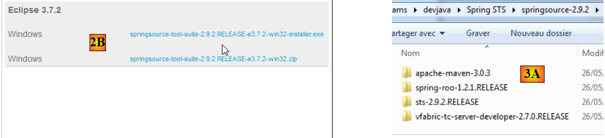

9. 附录
本文将介绍如何在 Windows 7 或 8 系统上安装本文档中使用的工具。
9.1. 安装 JDK
在 URL [http://www.oracle.com/technetwork/java/javase/downloads/index.html]（2014年10月）中，JDK 是最新版本。 下文将把 JDK 的安装目录命名为 <jdk-install>。
 |
9.2. Maven的安装
Maven 是一款用于管理 Java 项目依赖关系的工具，功能远不止于此。它可在 URL 和 [http://maven.apache.org/download.cgi] 中找到。
 |
下载并解压该压缩包。我们将 Maven 的安装目录命名为 <maven-install>。
 |
- 在 [1] 中，文件 [conf / settings.xml] 用于配置 Maven；
其中包含以下内容：
<!-- localRepository
| The path to the local repository maven will use to store artifacts.
|
| Default: ${user.home}/.m2/repository
<localRepository>/path/to/local/repo</localRepository>
-->
如果您的 {user.home} 路径中包含空格（例如 [C:\Users\Serge Tahé]），第 4 行的默认值可能会导致某些软件（包括 IntellijIDEA）出现问题。此时，我们需要这样写：
<!-- localRepository
| The path to the local repository maven will use to store artifacts.
|
| Default: ${user.home}/.m2/repository
<localRepository>/path/to/local/repo</localRepository>
-->
<localRepository>D:\Programs\devjava\maven\.m2\repository</localRepository>
这样在第 7 行就可以避免使用包含空格的路径。
9.3. 安装 STS（Spring Tool Suite）
我们将安装 SpringSource Tool Suite [http://www.springsource.com/developer/sts]，这是一个预装了大量与 Spring 框架相关插件的 Eclipse 环境，同时还预装了 Maven 配置。
 |
- 访问 SpringSource 工具套件 (STS) [1]，以下载 STS [2A] [2B] 的最新版本，
 |
 |
- 下载的文件是一个安装程序，它会生成文件树 [3A] [3B]。在 [4] 中，运行可执行文件，
- 在 [5] 中，关闭欢迎窗口后显示 IDE 的工作窗口。在 [6] 中，显示应用程序服务器窗口，
 |
- 在 [7] 中，显示服务器窗口。已注册一台服务器。这是一台兼容 Tomcat 的 VMware 服务器。
需向 STS 指定 Maven 的安装目录：
 |
- 在 [1-2] 中，配置 STS；
- 在 [3-4] 中，添加一个新的 Maven 安装；
 |
- 在 [5] 中，指定 Maven 的安装目录；
- 在 [6] 中，完成向导；
- 在 [7] 中，将新安装的 Maven 设为默认安装；
 |
- 在 [8-9] 中，检查 Maven 的本地仓库，即它将下载的依赖项存放的文件夹，以及 STS 将构建的工件存放的文件夹；
9.4. 安装 Tomcat 服务器
Tomcat 服务器可在 URL [http://tomcat.apache.org/download-80.cgi] 处获取。本文中的示例已使用 URL [http://archive.apache.org/dist/tomcat/tomcat-8/v8.0.9/bin/] 提供的 8.0.9 版本进行测试。
 |
下载适用于当前工作站的压缩包 [1]。解压后将得到目录结构 [2]。完成此操作后，即可将该服务器添加到 STS 的服务器列表中：
 |
- 在 [1-3] 中，向 STS 添加新服务器；（要打开服务器窗口，请选择 Window / Show view / Other / Server / Servers）；
 |
- 在 [5] 中，选择一个 Tomcat 8 服务器；
- 在 [6] 中，为该服务器命名；
- 在 [8] 中，指定之前下载的 Tomcat 的安装目录；
- 在 [9] 中，选择新服务器；
 |
- 在 [11-12] 中，启动 Tomcat 8 服务器；
- 在 [13-14] 中，显示其日志窗口；
- 在 [15] 中，用于停止服务器；
9.5. 安装 [WampServer]
[WampServer]即 ，是一套用于在Windows机器上基于PHP / MySQL / Apache进行开发的软件包。 我们将仅将其用于 SGBD 和 MySQL。
 |
- 在 [WampServer] [1] 网站上，选择合适的版本 [2]，
- 下载的可执行文件是一个安装程序。安装过程中会要求提供各种信息。这些信息与 MySQL 无关，因此可以忽略。 安装完成后将显示 [3] 窗口。运行 [WampServer]，
 |
- 在 [4] 中，[WampServer] 的图标将安装在屏幕右下角的任务栏中 [4]，
- 点击该图标后，将显示菜单 [5]。该菜单用于管理 Apache 服务器以及 SGBD 和 MySQL。 要管理该服务器，请使用选项 [PhpPmyAdmin]，
- 此时将显示如下窗口，

本文将简要介绍 [PhpMyAdmin] 的使用方法。相关文档会在必要时提供详细信息。
9.6. 安装 Chrome 插件 [Advanced Rest Client]
本文档使用谷歌Chrome浏览器（http://www.google.fr/intl/fr/chrome/browser/）。我们将为其添加[Advanced Rest Client]扩展程序。操作步骤如下：
- 使用 Chrome 浏览器访问 [Google Web store] 网站（https://chrome.google.com/webstore）；
- 搜索 [Advanced Rest Client] 应用：
 |
- 此时该应用程序即可下载：
 |
- 要获取该应用，您需要创建一个 Google 账户。随后 [Google Web Store] 会要求确认 [1]：
 |
- 在 [2] 中，已添加的扩展程序可在 [Applications] [3] 选项中找到。该选项会显示在您在浏览器中创建的每个新标签页（CTRL-T）上。
9.7. Java 中的 jSON 管理
[Spring MVC] 框架在开发者完全不知情的情况下，使用了 jSON [Jackson] 库。为说明什么是 jSON （JavaScript 对象表示法），我们在此展示一个程序，该程序将对象序列化为 jSON，并通过反序列化生成的 jSON 字符串来还原初始对象。
“Jackson”库可用于生成：
- 对象的 jSON 字符串：new ObjectMapper().writeValueAsString(object)；
- 根据字符串 jSON 创建对象：new ObjectMapper().readValue(jsonString, Object.class)。
这两种方法都可能引发 IOException 异常。以下是一个示例。
 |
上述项目是一个Maven项目，包含以下[pom.xml]文件；
<?xml version="1.0" encoding="UTF-8"?>
<project xmlns="http://maven.apache.org/POM/4.0.0"
xmlns:xsi="http://www.w3.org/2001/XMLSchema-instance"
xsi:schemaLocation="http://maven.apache.org/POM/4.0.0 http://maven.apache.org/xsd/maven-4.0.0.xsd">
<modelVersion>4.0.0</modelVersion>
<groupId>istia.st.pam</groupId>
<artifactId>json</artifactId>
<version>1.0-SNAPSHOT</version>
<dependencies>
<dependency>
<groupId>com.fasterxml.jackson.core</groupId>
<artifactId>jackson-databind</artifactId>
<version>2.3.3</version>
</dependency>
</dependencies>
</project>
- 第 12-16 行：引入 'Jackson' 库的依赖项；
[Personne] 类如下：
package istia.st.json;
public class Personne {
// 数据
private String nom;
private String prenom;
private int age;
// 制造商
public Personne() {
}
public Personne(String nom, String prénom, int âge) {
this.nom = nom;
this.prenom = prénom;
this.age = âge;
}
// 签名
public String toString() {
return String.format("Personne[%s, %s, %d]", nom, prenom, age);
}
// 获取器和设置器
...
}
类 [Main] 如下所示：
package istia.st.json;
import com.fasterxml.jackson.databind.ObjectMapper;
import java.io.IOException;
import java.util.HashMap;
import java.util.Map;
public class Main {
// 序列化/反序列化工具
static ObjectMapper mapper = new ObjectMapper();
public static void main(String[] args) throws IOException {
// 创建人员
Personne paul = new Personne("Denis", "Paul", 40);
// 显示jSON
String json = mapper.writeValueAsString(paul);
System.out.println("Json=" + json);
// 基于JSON实例化Personne
Personne p = mapper.readValue(json, Personne.class);
// 显示人员
System.out.println("Personne=" + p);
// 一个数组
Personne virginie = new Personne("Radot", "Virginie", 20);
Personne[] personnes = new Personne[]{paul, virginie};
// JSON 显示
json = mapper.writeValueAsString(personnes);
System.out.println("Json personnes=" + json);
// 字典
Map<String, Personne> hpersonnes = new HashMap<String, Personne>();
hpersonnes.put("1", paul);
hpersonnes.put("2", virginie);
// 显示 JSON
json = mapper.writeValueAsString(hpersonnes);
System.out.println("Json hpersonnes=" + json);
}
}
执行该类将显示以下屏幕内容：
从该示例中需注意：
- 对象 [ObjectMapper] 是转换 jSON / Object 所必需的：第 11 行；
- 转换 [Personne] --> jSON：第 17 行；
- 转换 jSON --> [Personne]：第 20 行；
- 由这两个方法触发的异常 [IOException]：第 13 行。
9.8. 安装 [Webstorm]
[WebStorm]（WS）是基于JetBrains开发的IDE，用于开发HTML / CSS / JS。我发现它非常适合开发 Angular 应用程序。 下载地址为 [http://www.jetbrains.com/webstorm/download/]。该软件虽为付费版，但提供 30 天的试用版可供下载。此外还有价格实惠的个人版和学生版。
要在应用程序中安装 JS 库，WS 会使用一个名为 [bower] 的工具。 该工具是 [node.js] 的一个模块，而 [node.js] 是一组 JS 库。此外，JS 库需从 Git 站点获取，因此下载端计算机上必须安装 Git 客户端。
9.8.1. 安装 [node.js]
[node.js]的下载地址为[http://nodejs.org/]。下载安装程序后运行即可。目前无需进行其他操作。
9.8.2. 安装 [bower] 工具
安装 [bower] 工具（该工具将用于下载 JavaScript 库）有多种方式。我们将通过控制台进行安装：
C:\Users\Serge Tahé>npm install -g bower
C:\Users\Serge Tahé\AppData\Roaming\npm\bower -> C:\Users\Serge Tahé\AppData\Roaming\npm\node_modules\bower\bin\bower
bower@1.3.7 C:\Users\Serge Tahé\AppData\Roaming\npm\node_modules\bower
├── stringify-object@0.2.1
├── is-root@0.1.0
├── junk@0.3.0
...
├── insight@0.3.1 (object-assign@0.1.2, async@0.2.10, lodash.debounce@2.4.1, req
uest@2.27.0, configstore@0.2.3, inquirer@0.4.1)
├── mout@0.9.1
└── inquirer@0.5.1 (readline2@0.1.0, mute-stream@0.0.4, through@2.3.4, async@0.8
.0, lodash@2.4.1, cli-color@0.3.2)
- 第 1 行：命令 [node.js]，用于安装模块 [bower]。 为使该命令生效，必须确保可执行文件 [npm] 位于该机器的 PATH 目录中（详见下文）；
9.8.3. 安装 [Git]
Git 是一个软件版本控制系统。其 Windows 版本名为 [msysgit]，可在 URL 和 [http://msysgit.github.io/] 中获取。 我们不会使用 [msysgit] 来管理应用程序的版本，而是仅用于下载位于 [https://github.com] 类型网站上的 JS 库，这些网站需要，该协议由 [msysgit] 客户端提供
安装向导包含以下步骤：
 |  |
对于安装的其他步骤，您可以接受系统提供的默认值。
Git 安装完成后，请确认可执行文件位于您机器的 PATH 目录中：[Panneau de configuration / Système et sécurité / Système / Paramètres systèmes avancés]：
 |  |
PATH 变量应如下所示：
D:\Programs\devjava\java\jdk1.7.0\bin;D:\Programs\ActivePerl\Perl64\site\bin;D:\Programs\ActivePerl\Perl64\bin;D:\Programs\sgbd\OracleXE\app\oracle\product\11.2.0\client;D:\Programs\sgbd\OracleXE\app\oracle\product\11.2.0\client\bin;D:\Programs\sgbd\OracleXE\app\oracle\product\11.2.0\server\bin;...;D:\Programs\javascript\node.js\;D:\Programs\utilitaires\Git\cmd
请确认：
- [node.js] 的安装目录路径是否存在（此处为 D:\Programs\javascript\node.js）；
- Git 客户端可执行文件的路径是否存在（此处为 D:\Programs\utilitaires\Git\cmd）；
9.8.4. [Webstorm] 的配置
现在检查 [Webstorm] 的配置
 |  |
 |
在上方，请选择 [1] 选项。 已安装的 [node.js] 模块列表将显示在 [2] 中。如果您已按照之前的安装流程操作，该列表中应仅包含 [bower] 模块的 [3] 这一行。
9.9. 安装 Android 模拟器
Android SDK 随附的模拟器运行缓慢，令人望而却步。 [Genymotion]公司提供了一款性能更强的模拟器。该模拟器可在URL [https://cloud.genymotion.com/page/launchpad/download/]
（2014年2月）。
您需要注册才能获取个人使用版。请下载 [Genymotion] 产品及 VirtualBox 虚拟机；

安装并运行 [Genymotion]。随后下载适用于平板电脑或手机的镜像：
 |
- 在 [1] 中，添加一个虚拟终端；
- 在 [2] 中，选择一个或多个要安装的终端。您可以通过指定所需的 Android 版本（[3]）以及终端型号（[4]）来筛选显示的列表；
 |
- 下载完成后，您将获得 [5] 列表，其中列出了可用于测试您的 Android 应用的虚拟终端；